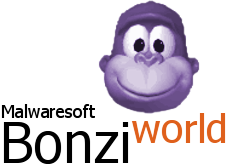

BonziWORLD
Leading the industry in gorilla-based chat clients.
All the source code for the server and client is publically available here. If you want to run your own BonziWORLD, by all means go ahead. Do whatever you'd like with this code. Just try to put me somewhere in the credits.
Dependencies
- Node.js and npm
- Ruby
- Sass
- Git (or without a git)
- Cordova (Optional)
Setup
In a terminal/command prompt, navigate to where you'd like BonziWORLD to be placed and run the following:
Without git, click the green button "Download", and click download as zip
Get 7zip program by visiting 7-zip.org
Client
Server
After this, BonziWORLD will be accessible on port 3000. (http://localhost:3000/)
Disclaimer
I'm not responsible if you screw up anything with your computer while setting this up. I have no idea how you would, but someone will find a way. I also will not provide support for installing dependencies. If you have everything installed properly, the above commands will work.
Last one, add port forwarding in your router!
Search on Google and find the solution to add your port 3000, if doesn't find hard way to search, try harder to find setting.